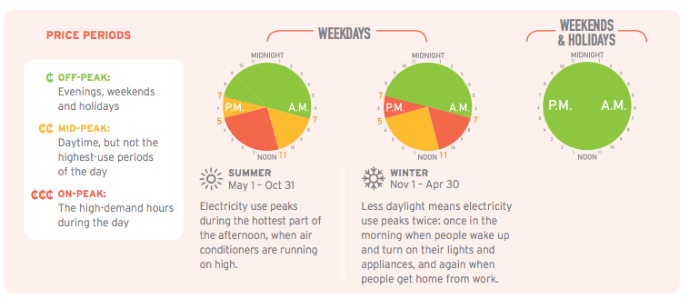

TIME-OF-USE ELECTRICITY PRICES
Households and small businesses in Ontario pay time-of-use prices for electricity that change according to the TIME OF DAY and DAY OF THE WEEK. The peak periods also change by SEASON.
Your smart meter tells your utility exactly how much power you use and when you use it. With this information, your utility charges you for the amount of power you use at off-peak, mid-peak and on-peak times.
REASONS FOR DIFFERENT PRICES
WHEN DEMAND IS LOW and fewer people are using power, lower-cost electricity is available from sources like nuclear and large hydroelectric systems.
WHEN DEMAND RISES during the day, the province’s supply of lower-cost electricity is used up, and more expensive sources need to be used.
